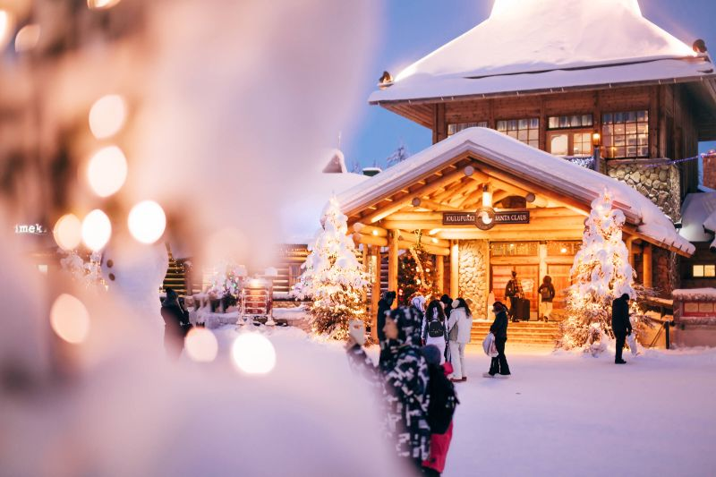
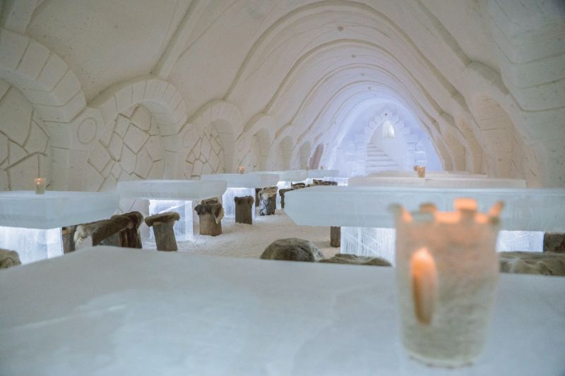
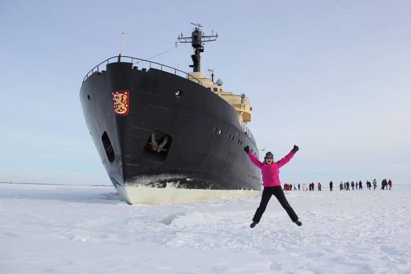

Trip to the Lapland
- Sleep under the Northern Lights
- Blaze through Arctic nature
- Experience the magic of Christmas in Santa's hometown
- Castles of snow and ice
- Hop aboard a mighty icebreaker
Sleep under the Northern Lights
In Finland, you can view nature's most spectacular light show, the Aurora Borealis, from purpose-built spaces like glass huts and luxury suites.
Did you know that the Northern Lights are visible roughly 200 nights a year in Finnish Lapland? While many choose to go Aurora-spotting by snowshoe, ski, snowmobile or dog sled, you can also view the Northern Lights from the comfort of the indoors. Here are a few places to stay cosy and sleep well without missing out on the show.
Note: In Finland, nights are typically dark enough to see the Northern Lights from late August to April – all you need are clear skies and a bit of luck. Head north for the best chance of catching them.
- Arctic Treehouse Hotel, Rovaniemi
Located on the Arctic Circle in Rovaniemi, these 37 tree houses have warm, wooden interiors that showcase Scandinavian design and Lappish heritage. Take in spectacular views of the northern skies from the nest-like atmosphere of these comfortable, thoughtfully designed suites.
- Kemi Seaside Glass Villas, near the Bay of Bothnia
Next to the Snow Castle and just a couple of minutes away from Kemi's city centre, you'll find the Kemi Seaside Glass Villas. Currently, there are just 20 villas with small kitchens and bathrooms. Settle in, snuggle up and enjoy nature's light show from early autumn until late spring.
- Aurora Bubbles, Wilderness Hotel Nellim
The village of Nellim by Lake Inari sits within some of Lapland's most beautiful scenery. Stay the night in an Aurora Bubble at the Wilderness Hotel Nellim, complete with a double bed and eco-toilet, for a unique view of the Northern Lights. If you're feeling adventurous, you can try their Aurora Camp and Northern Lights search by snowmobile.
- Aurora Dome, Harriniva
This round hut-like tent with Lappish-themed decor and a transparent wall is the perfect place to enjoy magical winter scenery and Lake Torassieppi lit up by the Northern Lights. It's completely insulated and features a fireplace with a warm, open fire, so guests stay cosy all night long. Plus, the Dome's transparent walls face north to ensure the best possible views of the starlit sky and Northern Lights.
- Glass huts on the Arctic Circle in Rovaniemi and near Pyhä-Luosto National Park, Luosto
These unique glass huts by Santa's Hotels opened back in December 2016, and they've been a big hit with guests ever since. Experience Lapland's ever-changing nature – including the Northern Lights and the Midnight Sun – from the comfort of your glass-roofed hotel room.
Blaze through Arctic nature
At Pyhä, you can take a guided electric snowmobile tour that's fast and fun – without noise or fumes! Hop aboard one of these Finnish-built eSleds in Pyhä – one of the first places offering them – to see for yourself.
Looking for a more traditional way to get around? Try a reindeer safari. You'll take a seat inside a comfy sleigh and watch as stunning scenery passes you by. Plus, reindeer herders usually carry treats, including traditional Finnish cinnamon buns and coffee, which you can enjoy alongside a roaring campfire while you learn all about reindeer.
Experience the magic of Christmas in Santa's hometown
Santa Claus Village is one of Lapland's best-known attractions, and for good reason – where else can you meet Father Christmas in person, all year round? While seeing Santa is obviously the main attraction, Santa Village has plenty of shops, restaurants and cafés to keep visitors busy and entertained. Hop in a sleigh and go for a husky or reindeer ride, or take an exciting snowmobile tour. For a dose of adorable, visit the petting zoo to interact with rabbits, alpacas and other furry creatures. Mrs. Claus even has her own cabin where you can decorate gingerbread cookies alongside the elves!
Sleep, drink and dine in castles of snow and ice
Thanks to an abundance of the white stuff, Finns are expert snow-builders. In Rovaniemi, you can sleep in a snow hotel, get married in a snow chapel, or build a snow hut under expert supervision (then sleep in it!). You can also dine in a snow restaurant, have a drink in an ice bar, and play in a snow castle.
One place to do it is the Lapland Hotels Snow Village, near Ylläs and Levi. This unique and magical world is constructed each year from ice and snow – about 20 million kilos of snow and 350,000 kilos of ice, to be exact! The design changes annually but often includes things like ice sculptures, snow suites, and ice restaurants and bars.
Similarly, Finns have been building an astonishing snow and ice castle in Kemi since the mid-90s. This structure's glittering walls, shimmering pathways and sparkling snow sculptures will definitely leave you awestruck. You can even stay overnight in the Snow Hotel! And don't worry – if you happen to visit Kemi during the summer months, you can still take part in the fun at the year-round Snow Experience.
Hop aboard a mighty icebreaker
Arctic Icebreaker Sampo previously ploughed the frozen seas of Finland for trade before becoming a tourist attraction in Kemi in the late 1980s. Today, this majestic vessel takes visitors on truly unique cruises. Prepare to be awestruck when you hear the thundering sound of more than 3,500 tons of steel breaking through the thick ice of the Gulf of Bothnia!
But that's not all Sampo cruises have to offer. You'll also get a guided tour of the ship, complete with visits to the engine room and the captain's bridge, and have the chance to swim in the freezing sea. Yes, you read that right, but don't worry – it's not required. If you do take that leap of faith, though, rest-assured that you'll be wearing a survival suit.
